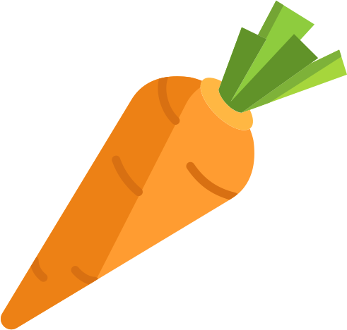
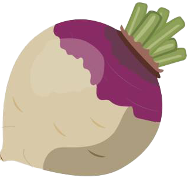
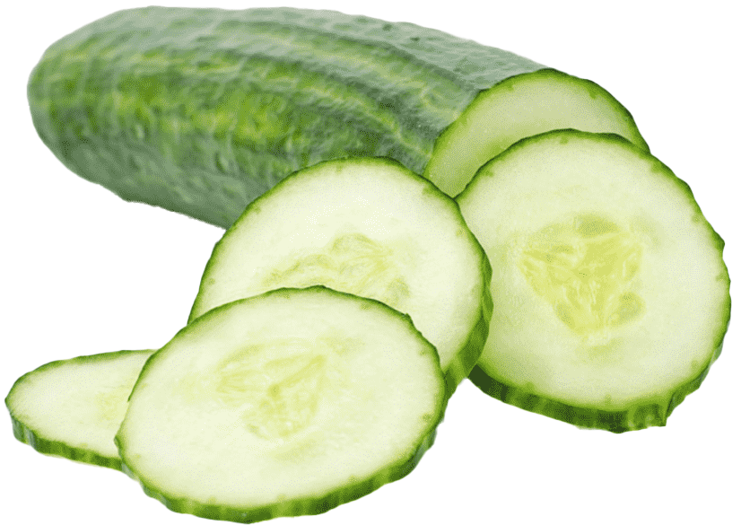
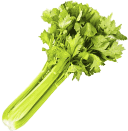
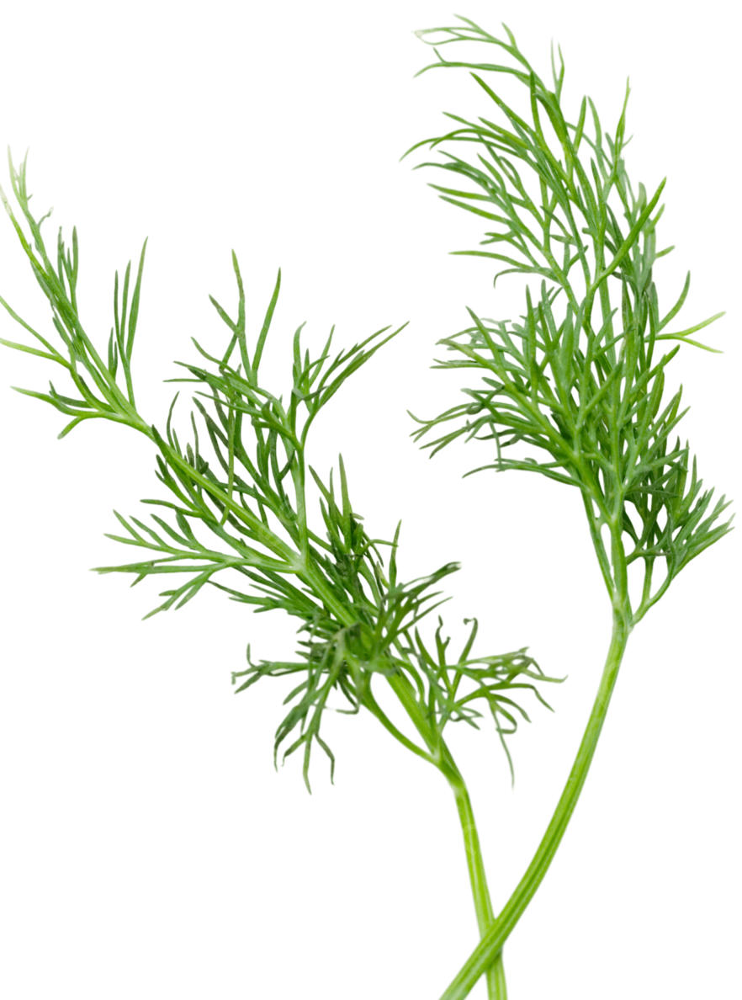
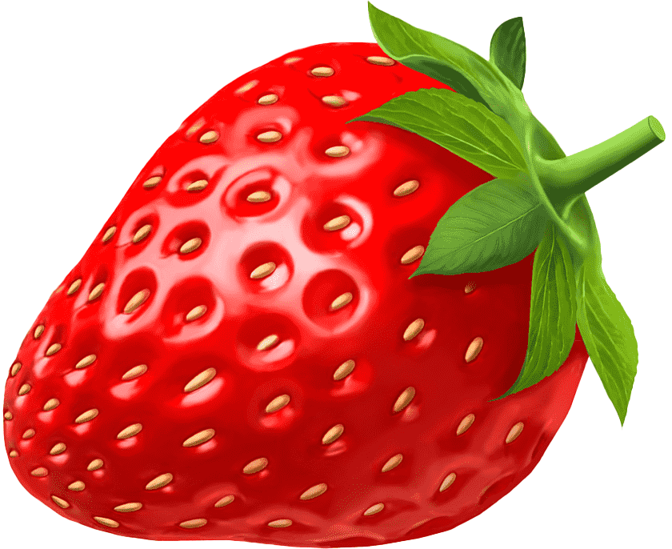
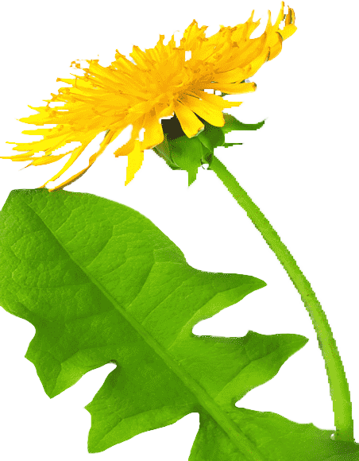
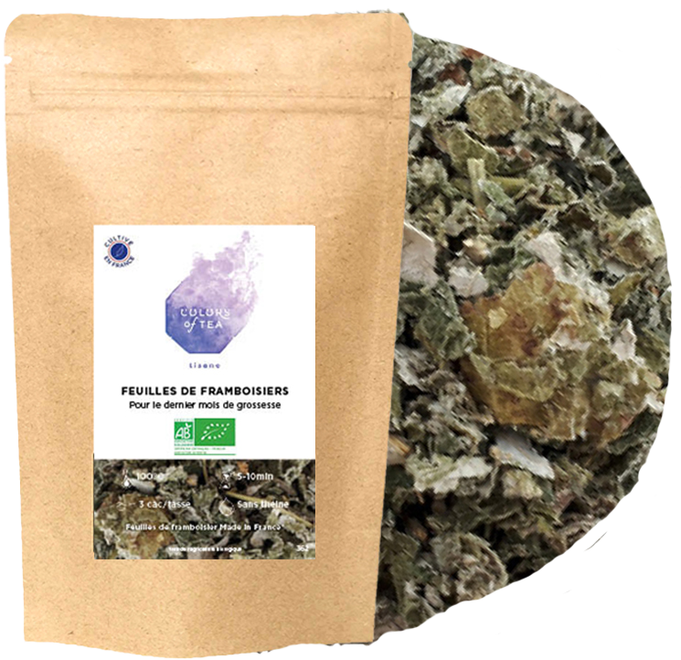
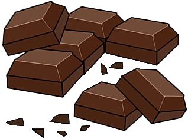

Légumes 
Légumes-feuilles 
- Laitue romaine (éviter la laitue iceberg)
- Épinards (avec modération)
- Cresson
- Roquette
- Pissenlit
- Persil
- Coriandre
- Menthe
- Basilic
- Fenouil
Légumes racines 
- Carottes (en petites quantités)
- Navets (feuilles et racines)
Légumes-fruits 
- Courgettes
- Concombres
- Poivrons (toutes les couleurs)
- Tomates (avec modération, sans les feuilles et les tiges)
Autres légumes 
- Brocoli (feuilles et tiges, éviter les fleurons en grande quantité)
- Céleri
- Choux de Bruxelles
- Chou frisé (kale)
- Endives
- Chou-rave (feuilles et bulbe)
- Radis (feuilles et racines, en petites quantités)
Herbes aromatiques 
- Persil
- Coriandre
- Menthe
- Basilic
- Aneth
- Thym
- Romarin
- Origan
Fruits (en petites quantités)

- Pommes (sans les pépins)
- Bananes
- Fraises
- Framboises
- Mûres
- Myrtilles
- Poires (sans les pépins)
- Ananas
- Mangues
- Pêches (sans le noyau)
- Prunes (sans le noyau)
- Melon
- Pastèque (sans les pépins)
Herbes et graminées 
- Foin de prairie
- Foin de Timothy (foin de fléole des prés)
- Foin de luzerne (surtout pour les jeunes lapins)
- Pissenlit
- Trèfle
- Herbe de blé
Autres

- Branches et feuilles de pommier (non traitées aux pesticides)
- Branches de saule
- Branches de noisetier
- Feuilles de framboisier
- Feuilles de mûrier
Aliments à éviter absolument

- Chocolat
- Produits laitiers
- Aliments sucrés ou gras
- Aliments salés
- Pommes de terre
- Rhubarbe
- Haricots
- Avocat
- Oignons
- Ail
Remarques
-
Introduisez les nouveaux aliments progressivement pour éviter les problèmes
digestifs.
-
Veillez à ce que les aliments soient frais et non traités aux pesticides.
-
Assurez-vous que les lapins aient toujours accès à de l'eau fraîche et
propre.